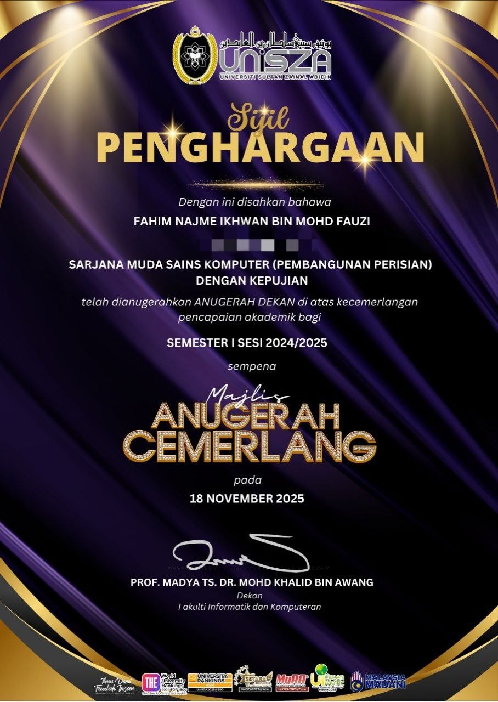

Academic High
Semester 3 & 4
Semester 3 & 4
Majlis Penganugerahan Lencana Dekan UniSZA
Sangat bersyukur atas pengiktirafan Senat dan Fakulti Informatik & Komputer (FIK) atas penganugerahan Lencana Dekan bagi dua semester berturut-turut. Kejayaan ini membakar semangat untuk fasa pembinaan teknologi akan datang.
Academic Excellence
LinkedIn